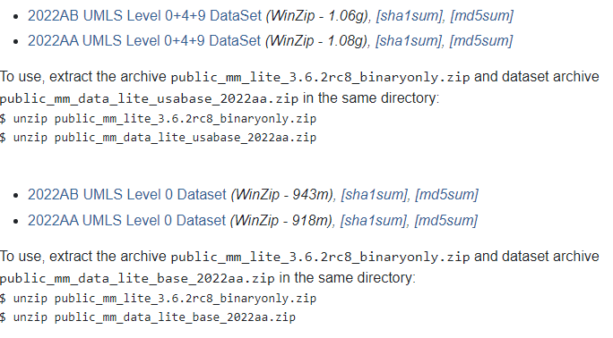

Build UMLS for Metamaplite¶
Using specific UMLS subsets for running Metamaplite.
Pre-built Subsets¶
On the Metamaplite home page there are pre-built subsets of the UMLS which include either just the Level 0 vocabulary or the Level 0+4+9 vocabularies. To include these in your installation:

Download the desired dataset from the Downloads section of the Metamaplite home page.
Extract/unzip the archive into the same directory as Metamaplite.
In other words, the
DataSetarchives contain content that should be placed in$METAMAPLITE_BASE/data/ivfThe content does not need to be placed in this directory if you prefer a different organizational structure (see step #3)
If running using the shell script (
metamaplite.shormetamaplite.bat), update that script to point to the appropriate subset.Namely, the option
-Dmetamaplite.index.directoryshould point to the unpacked directory.
Building Custom Subset¶
The pre-built subsets are the easiest way to go, but that doesn’t work for all applications. Let’s suppose, e.g., your project requires MedDRA which is a level 4 vocabulary and not currently included in any pre-built subset. How can we include it? We will follow the following three steps:
Download the full UMLS (with
mmsys/Metamorphosys)Download the LVG
Run
mmsysto get the desired subset.Index the subset
Run MML pointing to this subset
Step 1: Download the full UMLS¶
NB: At some point, you will be prompted to login. If you don’t yet have a UMLS account, register here:
Navigate to the UMLS Knowledge Sources Downloads.
Choose a download under
Full UMLS Release Files. It should be around 35GB and include a description stating that it ‘includes…MetamorphoSys’.Unzip the archive.
Inside the archive, you’ll also find a
mmsys.zipwhich also needs to be extracted.This contains MetamorphoSys (mmsys) which we’ll be using to build a subset.
Step 2: Download the LVG.¶
The LVG is a lexical variant generator which will generate lexical variants for all the terms in your preferred subset. This allows a greater capture of terms that the base words alone.
Download LVG from the NIH website.
If this link doesn’t work, search for
lexical tools nihUnless you have another reason, download the ‘Full Version’
Extract the
tgzarchive (on Windows, you may need to use something like 7-zip).I placed it in
D:\lvg2023This will be the
LVG_DIRreferred to later when indexing the UMLS subset.
There are shell scripts, but I don’t usually use these…just run the following command from the
LVG_DIR(e.g., inlvg202Xwhere directories include ‘bin’, ‘lib’, ‘install’, ‘examples’, etc.):Windows:
java -cp ".;lib\lvg2023api.jar;install\lib\lvgInstall.jar;lib\jdbcDrivers\HSqlDb\hsqldb.jar" gov.nih.nlm.nls.lvg.install.Setup.LvgInstallLinux (untested):
java -cp ".:lib/lvg2023api.jar:install/lib/lvgInstall.jar:lib/jdbcDrivers/HSqlDb/hsqldb.jar" gov.nih.nlm.nls.lvg.install.Setup.LvgInstall
Step 3: Run MetamorphoSys¶
In the directory where you unzipped
mmsys.zip, locate therunshell script for your system:Linux:
run_linux.shMac:
run_mac.shWindows:
run64.bat
Windows Users
Ensure that you are running run64.bat and not run.bat which points to the 32-bit version.
Alternatively, you can update the run.bat line 11 from jre\windows to jre\windows64 (this is the only difference).
Run the target shell script and MetamorphoSys will open.

To create a new subset, choose
Install UMLS.Ensure that
Sourcepoints to your installation and updateDestinationto point to your desired output.Click
OKIf this is your first time, choose
New Configuration....If you want to use an existing configuration file that you have, select
Open Configuration...
Acceptthe license agreement notice.The
Select default subsetallow you to select the starting configuration which can be helpful for some use cases.E.g., if you want only Level 0 sources, SNOMED_CT, and MedDRA, start with
Level 0 + SNOMEDCT_US, and then add MDR after clicking OK.
If you don’t need anything pre-selected (e.g., you just want MedDRA), pick anything and just select to include only MDR after clicking OK.
Find the
Source Listtab. Here, pay attention to the top where the selected sources (i.e., the ones highlighted blue) are either INCLUDED or EXCLUDED.Sort alphabetically or by level by clicking on any headers
Be careful not to click the sources, otherwise you will lose your selection
If this happens, find the
Resetmenu item at the top and reset the source lists.
To find
MedDRA, I sort byFull Source Nameand find thems.Hold the
Ctrlkey and add to the selection by clicking the target vocabulary
When you are done adding sources (and any other configurable options), save the configuration file with
File>Save ConfigurationThen, build the subset with
Done>Begin Subset.This may take a while depending on the number of vocabularies…So go pour yourself some more tea and have a croissant.
Step 4: Index the Subset¶
You have now created a UMLS subset to run, but it is not yet indexed for Metamaplite. To index it, follow the steps below. Instructions are also available on MML README.
Locate your MML installation directory (
$MML_HOME).Under
$MML_HOME/bin, there should be twocreate_indexesscripts, one for each system.Open this file as it will likely require some updates/modifications.
Update the MML version to ensure it matches yours. E.g., I updated mine from
3.6.2rc5to3.6.2rc8This is just needed for the name of the jar file in
$MML_HOME/targetso you can look up your version there.
Add the
LVG_DIRto point to where you downloaded the LVG in step 2set LVG_DIR=D:\lvg2023orLVG_DIR=~/lvg2023
On Windows, in the call to ‘GenerateVariants’ (between lines 50-60), add
"-Dgv.words.temp.filename=words.txt.tmp"between-Xmx4gand-cp.This fixes an issue where the default file is set to a unix value.
See issue status: https://github.com/lhncbc/metamaplite/issues/22
On Windows (and maybe Linux), create the directory
%IVFDIR%\indices\meshtcrelaxedSee issue status: https://github.com/lhncbc/metamaplite/issues/21
You can either run this from the command line with four arguments or update the four lines beginning with
MRCONSO(set MRCONSOon Windows) to the correct paths.One option is to create a copy of this
create_indexes.batscript called, e.g.,create_indexes_mdr.batand modify the arguments. This will help provide documentation/reproducibility.
When running, if you get an error:
java.io.FileNotFoundException: \tmp\words.txt.tmp: see Step 4, #3, bullet 3java.io.FileNotFoundException: tables/vars.txt: see Step 4, #3, bullet 3java.io.FileNotFoundException: indices/meshtcrelaxed/postings: see Step 4, #3, bullet 4
Step 5: Run Metamaplite¶
In the
IVFDIR(i.e., the output directory from step 4), you’ll find two directories, ‘indices’ and ‘tables’.Use the
IVFDIRas themetamaplite.index.directoryoption when running Metamaplite.Using
mml_utils, the command line should look something like this:mml-run-filelist --properties metamaplite.index.directory C:\umls\2022AB\meddra\ivf --filelist filelist.txt --mml-home $MML_HOME